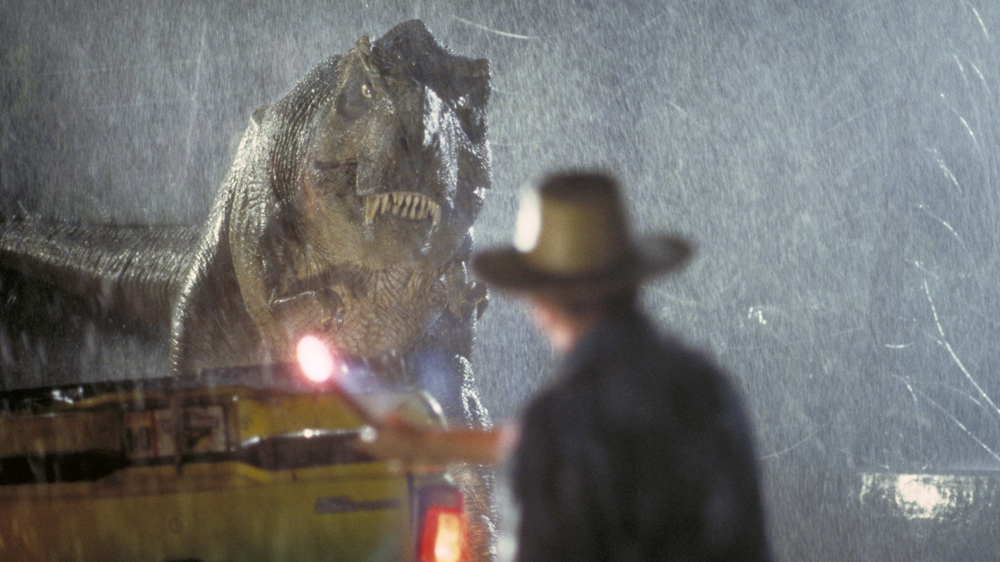

Einleitung &
Fragestellung
In den neuen Blockbuster-Filmen Hollywoods wird immer mehr auf Computer Generated Imagery (CGI) gesetzt. Ob Actionfilm, Science-Fiction-Epos oder Animationsfilm – ohne CGI wären viele Produktionen nicht umsetzbar.
Gleichzeitig wächst die Kritik: Aufmerksame Zuschauer bemängeln, dass vor allem neuere Filmproduktionen zunehmend „plastikhaft" und künstlich wirken. Ältere Filme wie Jurassic Park (1993) können nach wie vor mit ihren Effekten überzeugen – während neue Produktionen wie The Flash (2023) vielfach trotz riesiger Budgets kritisiert wurden.
Dies wirkt paradox: CGI-Technologie ist heute leistungsfähiger als je zuvor. Warum also wirken manche Filme von vor über 30 Jahren visuell überzeugender als viele aktuelle Produktionen?
„Es ist keinesfalls die Technologie selbst, die für den oft kritisierten ›Plastik-Look‹ neuerer Filme verantwortlich ist – die wahren Ursachen liegen in den strukturellen Produktionsbedingungen, ästhetischen Entwicklungen und kreativen Fehlentscheidungen."
Grundlagen &
Definitionen
Computer Generated Imagery bezeichnet computergenerierte Bilder in Film, Fernsehen und digitalen Medien. Im Kern: 3D-Modellierung, Animation, Texturierung, Beleuchtung und Rendering – mit dem Ziel der nahtlosen Integration in reale Filmaufnahmen.
Physisch realisierte Spezialeffekte direkt vor der Kamera: Miniaturmodelle, Masken, Animatronics, Pyrotechnik. Sie sind materiell vorhanden und reagieren real auf Licht und Bewegung – was ihnen unmittelbare Glaubwürdigkeit verleiht.
Je näher eine digitale Darstellung dem Realen kommt, desto stärker reagieren wir auf minimale Unstimmigkeiten. Dieses Wahrnehmungsphänomen zeigt sich besonders bei Gesichtern und Hautstrukturen – und erklärt viele CGI-Kritiken.
Praktisch vs. Digital — Der direkte Vergleich
- Physische Präsenz vor der Kamera
- Organische Reaktion auf echtes Licht
- Echte Texturen, Staubpartikel, Reflexe
- Schauspieler interagieren direkt
- Handwerk & künstlerischer Wert
- Unveränderbar, dadurch authentisch
- Simulierte Realität ohne Substanz
- Beleuchtung muss nachträglich angepasst werden
- Gefahr ästhetischer Glättung / „digitaler Look"
- Greenscreen isoliert Schauspieler
- Abhängig von Zeit, Budget, Leitung
- „Fix it in post"-Mentalität
Warum wirkt modernes CGI
oft unrealistischer?
Der Markt verlangt jährliche Franchise-Veröffentlichungen. VFX-Teams arbeiten unter enormem Termindruck, Szenen werden unvollständig gerendert. Bekannte Beispiele: Black Panther (2018) und Ant-Man and the Wasp: Quantumania (2023) wurden trotz hoher Budgets für unfertige Effekte kritisiert. Häufig werden Effekte an externe Studios in Ländern mit niedrigeren Kosten ausgelagert – was Qualitätskontrolle erschwert.
ÖkonomischCGI wird nicht mehr als Werkzeug zur Erweiterung der filmischen Realität genutzt, sondern als primäres Mittel der Weltenerschaffung. Virtuelle Kameras fliegen mit unmöglichen Bahnen durch Szenen – das menschliche Auge registriert diese Schwerelosigkeit als künstlich. Es entsteht ein chaotischer Überschuss an visuellen Informationen und eine verbreitete „Fix it in post"-Mentalität.
KreativDas menschliche Auge reagiert extrem sensibel auf unstimmige Lichtverhältnisse. Stimmt die Richtung, Intensität oder Farbtemperatur der virtuellen Lichtquellen nicht mit der realen Ausleuchtung überein, wirken Schauspieler wie Fremdkörper. Fehlende Kontaktschatten, ungenaue Motion Blur und mathematisch zu perfekte CGI-Modelle erzeugen sichtbare Brüche.
TechnischDer Übergang vom analogen Film zur Digitalkamera hat das Aussehen grundlegend verändert. Analoges Filmkorn wirkte organisch und lebendig. Digitale Kameras erzeugen bei Rauschen ein störendes, elektronisches Artefakt – das intern geglättet wird. Die Bilder wirken zu sauber, zu makellos. Die „greifbare Qualität" des Bildes geht verloren.
ÄsthetischDurch technischen Fortschritt ist die Erwartung an Fotorealismus stark gestiegen. Kleinste Abweichungen greifen sofort den Uncanny-Valley-Effekt aus. Gleichzeitig existiert ein starker nostalgischer Bias: Selbst objektiv weniger realistische praktische Effekte werden aufgrund ihrer physischen Materialität als authentischer empfunden.
PsychologischFilmbeispiele:
Gut & Schlecht
Meilenstein der Filmgeschichte: sorgfältige Mischung aus Animatronics und CGI. Die Kombination aus physischer Präsenz und digitaler Erweiterung erzeugt ein harmonisches Gesamtbild – bis heute überzeugend.

Zeitloser StandardJames Cameron verschob die Kinostart-Termine bewusst, um VFX-Studios wie Wētā FX die nötige Zeit für neue Rendering-Verfahren zu geben. Ergebnis: Oscar für beste visuelle Effekte, anhaltender Kassenerfolg.
Denis Villeneuve legt großen Wert auf klare kreative Vision von Beginn an. Praktische Elemente werden gezielt mit CGI kombiniert – keine Last-Minute-Änderungen, ausreichend Produktionszeit.
 Gutes CGI
Gutes CGI
Trotz hohem Budget für unfertige, künstliche Effekte kritisiert. Symptom der modernen „Fix it in post"-Mentalität: kreative Entscheidungen wurden auf die Postproduktion verschoben, was VFX-Teams überforderte.
 Kritisiertes CGI
Kritisiertes CGI
„Ich werde immer für praktische Effekte anstelle von CGI plädieren."
Interaktives
Wissens-Quiz
Teste dein Wissen über CGI, visuelle Effekte und die Hintergründe der Seminarfacharbeit.
Ausblick &
Zukunftsperspektiven
LED-Wände (Volumes) erlauben Regisseuren, komplexe 3D-Szenen in Echtzeit während des Drehs zu sehen. Unreal Engine 5 ermöglicht fotorealistisches Rendering in Echtzeit.
KI-gestütztes Rendering und physikalisch korrektes Lighting in Echtzeit eröffnen neue Chancen – bergen aber auch Risiken: Ersatz von CGI-Artists durch automatisierte Werkzeuge.
Filmemacher besinnen sich auf realitätsnäheres Filmhandwerk: modernste digitale Werkzeuge verschmelzen mit physischen Sets und echten Requisiten. Das Ziel ist nicht digitale Perfektion, sondern filmischer Realismus.
Fazit
Die abnehmende visuelle Glaubwürdigkeit moderner CGI-Effekte ist ein vielschichtiges Phänomen. Das menschliche Auge reagiert klar auf das Fehlen physischer Präsenz, fehlerhafte Lichtintegration und unrealistische Bewegungen – Schwächen, die in aktuellen Blockbustern immer häufiger auftreten.
Die Technologie selbst ist nicht schuld. Softwarelösungen und Rechenleistungen sind heute mächtiger als je zuvor. Die wahren Ursachen liegen im massiven ökonomischen und zeitlichen Druck auf VFX-Studios, in der „Fix it in post"-Mentalität sowie im übermäßigen Einsatz digitaler Effekte.
CGI darf nicht länger als Ersatz für die Realität dienen, sondern muss wieder als das verstanden werden, was es im Kern ist – ein mächtiges Werkzeug, das die physische Welt erweitert, anstatt sie zu ersetzen.
Literaturverzeichnis
Benjamin Jakob Kuhn
Posener Straße 11
27616 Beverstedt
E-Mail: bkuhn3061@gmail.com
Alle Inhalte dieser Website dienen ausschließlich der schulischen Präsentation. Alle Bildrechte wurden beachtet. Quellen sind vollständig im Literaturverzeichnis angegeben.